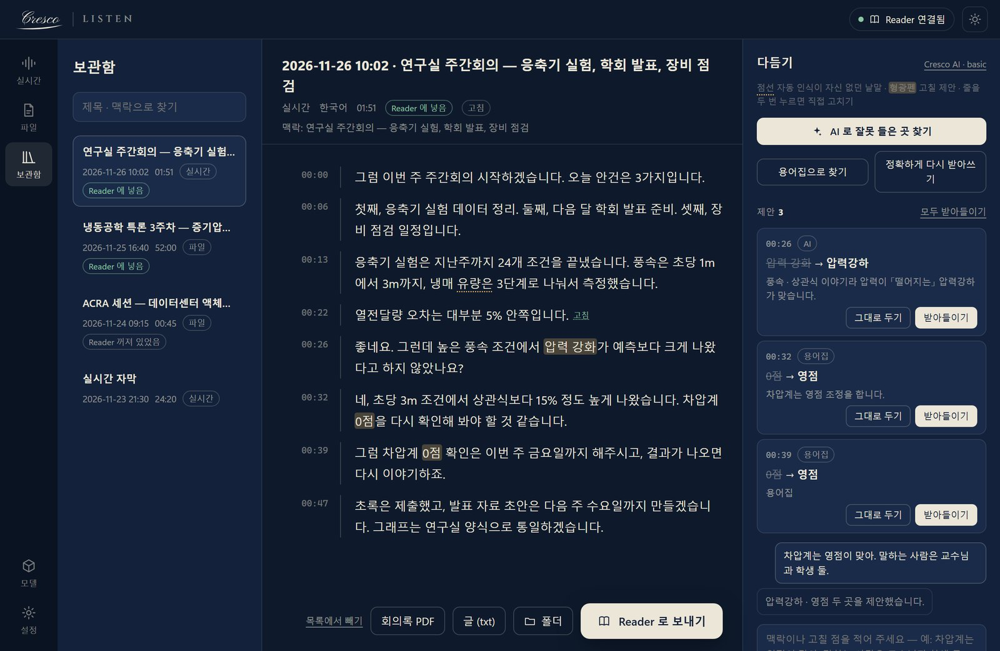
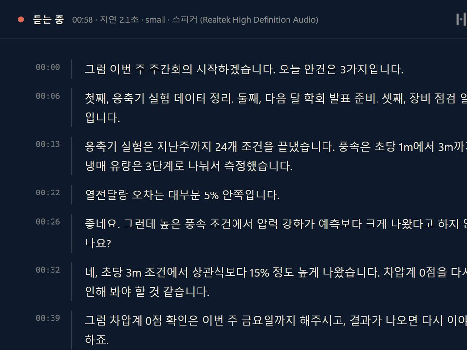
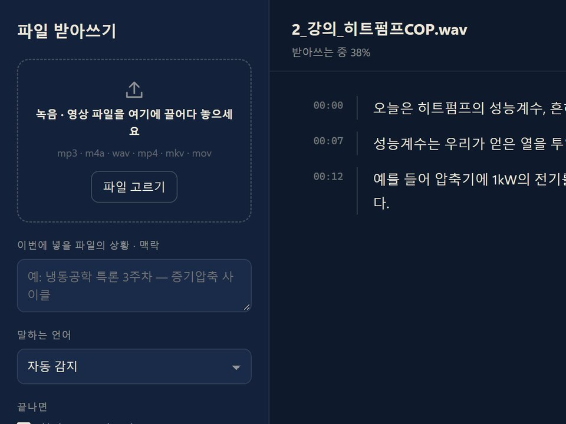
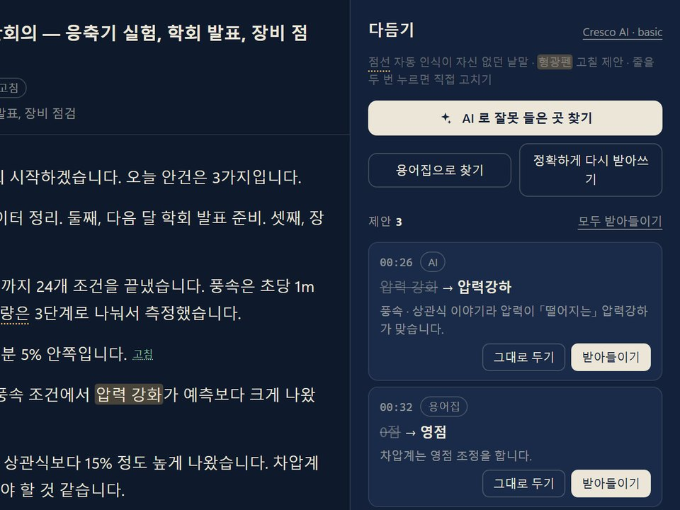
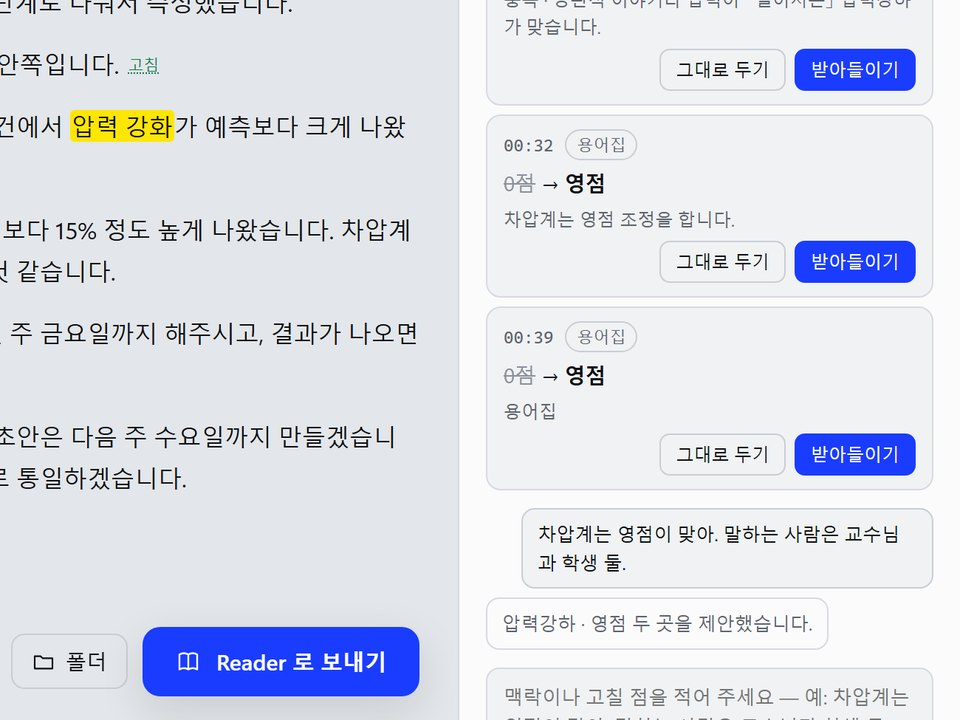

베타 0.1.0 · Windows
베타 0.1.0 · Windows
듣고, 적고, 다듬는다.
강의 · 세미나 · 회의 소리를 내 PC 안에서 그대로 받아쓰고, 잘못 들은 곳은 맥락으로 다듬어 Cresco Reader 서재로.

실제 앱 화면입니다. 내용은 Windows 기본 음성으로 읽힌 가상 연구실 회의이고, 「압력 강화」 · 「0점」은 실제로 그렇게 잘못 받아써진 것입니다. 오른쪽 제안 카드와 대화는 보여 드리려고 채워 넣은 예시입니다.
핵심은, 네 가지.
듣는 동안 적고, 끝나면 고치고, 서재로.




그리고줄을 누르면 그 대목 다시 듣기두 번 누르면 직접 고치기용어집정확한 모델로 다시 받아쓰기언어 자동 감지자막창 글자 크기srt 자막보관함 검색어두운 · 밝은 화면
더 자세히 보기
받아쓰기실시간 · 파일 · 모델
컴퓨터 소리 그대로
스피커나 이어폰으로 나오는 소리를 받아씁니다. 말이 끝나고 2초쯤 뒤에 한 줄씩, 화면 아래 반투명 자막창에도 띄웁니다. 끝내면 회의록과 보관함에 남습니다.
파일은 끌어다 놓기
mp3 · m4a · wav · mp4 · mkv 를 여러 개 한 번에. 하나씩 받아쓰며 진행률을 보여 주고, 같은 폴더에 글(.txt) · 자막(.srt) · 회의록 PDF 를 만듭니다.
PC 에 맞는 모델
그래픽카드가 없어도 됩니다. 실시간은 빠른 모델, 파일은 정확한 모델을 권하고, 「모델」에서 받거나 바꿉니다.
다듬기제안만 · 무료로 되는 것 · AI 로 하는 것
고치는 건 내가 받아들일 때만
잘못 들은 곳은 형광펜과 「원래 → 제안 + 까닭」 카드로만 뜹니다. 받아들이면 그때 바뀌고, 처음 받아쓴 글은 남아서 되돌릴 수 있습니다.
무료로 되는 것
줄을 눌러 다시 듣기, 직접 고치기, 「잘못 들은 말 → 맞는 말」 용어집, 그 줄만 정확한 모델로 다시 받아쓰기. 모두 내 PC 안에서 합니다.
AI 로 하는 것
상황 · 맥락을 보고 잘못 들은 곳 찾기, 끌어 고른 곳의 후보 2~3개, 「차압계는 영점이 맞아」 같은 지시. Cresco AI 구독(베이직 이상)으로 씁니다.
Cresco Reader 와 함께회의록 · 요약 카드 · 서재 질문
상황 · 맥락 한 줄
「LG 산학 주간회의 — 응축기 DB 점검」처럼 적으면 회의록 제목이 되고, 받아쓰기에 주제 · 용어 힌트로도 쓰입니다.
「받아쓰기」 선반으로
회의록 PDF 가 Reader 서재에 들어가고, 「강의 · 회의록」 요약 카드(정한 것 · 할 일 · 남은 질문)로 정리됩니다.
논문과 한 서재에서
Reader 의 사서에게 「지난주 회의에서 차압계 얘기 뭐였지?」처럼 물을 수 있습니다. 회의록과 논문이 같은 서재에 있으니까요.
녹음은, 내 PC 에.
받아쓰기는 내 PC 안에서 끝납니다. AI 로 다듬을 때만, 그 기록의 글이 Cresco AI 로 갑니다.
내 PC
소리 · 녹음 · 받아쓴 글 · 보관함 · 용어집 — 모두 여기에서 만들고 여기에 둡니다
모두 여기에Cresco AI
그 기록의 글만 Cresco 서버를 거쳐 Anthropic 의 Claude 로. 소리는 보내지 않습니다
누를 때만Cresco 서버
메일 주소 · 쓴 양만. 받아쓴 글 · 녹음 · 답은 남기지 않습니다
글은 남기지 않음자주 묻는 질문
언제 받을 수 있나요?
지금 받을 수 있습니다 — 이 페이지 아래 「베타 받기」. Windows 설치 파일(약 84MB)이고, 첫 실행 때 받아쓰기 모델을 한 번 받습니다. 서명되지 않은 베타라 Windows 가 경고를 띄우면 「추가 정보 → 실행」을 누르세요.
어떤 PC 에서 되나요?
Windows PC 에서 됩니다(Windows 11 에서 만들고 시험했습니다). 그래픽카드가 없어도 되고, 그럴 때 실시간은 빠른 모델로 받아씁니다(오타가 조금 더 있습니다). 파일 받아쓰기는 녹음 길이만큼 걸립니다.
인터넷이 없어도 되나요?
받아쓰기 · 다시 듣기 · 용어집 · 다시 받아쓰기는 인터넷 없이 됩니다. 처음 한 번 받아쓰기 모델을 받을 때와 AI 다듬기 · Reader 로 보낸 뒤의 요약만 인터넷이 필요합니다.
요금은 얼마인가요?
받아쓰기와 무료 다듬기(다시 듣기 · 직접 고치기 · 용어집 · 다시 받아쓰기)는 무료입니다. AI 다듬기는 Cresco 계정의 베이직 · 프로 요금제에서 쓰고, Reader · Note 와 함께 쓰는 AI 사용량에서 깎입니다. 무료 맛보기 계정은 AI 다듬기를 쓸 수 없습니다. AI 다듬기는 12월 3일부터 쓸 수 있습니다(바뀐 약관이 적용되는 날). 요금제 보기
Cresco Reader 와 같은 계정인가요?
네. 같은 Cresco 계정으로 로그인합니다. 계정은 Reader 나 계정 페이지에서 만듭니다.
회의를 녹음해도 되나요?
내가 참여한 대화는 녹음할 수 있지만, 내가 참여하지 않은 남의 대화를 녹음 · 기록하면 법에 걸립니다(통신비밀보호법). 회의는 녹음한다고 미리 알리는 것을 권합니다.
문제가 생기거나 바라는 기능이 있어요.
의견 · 문제 신고로 알려 주세요. 하나하나 읽습니다.

지금, 받아 보세요.
Cresco Listen 0.1.0 베타 · Windows. 받아쓰기는 로그인 없이 바로 되고, AI 다듬기는 12월 3일부터 Cresco 계정으로 씁니다.